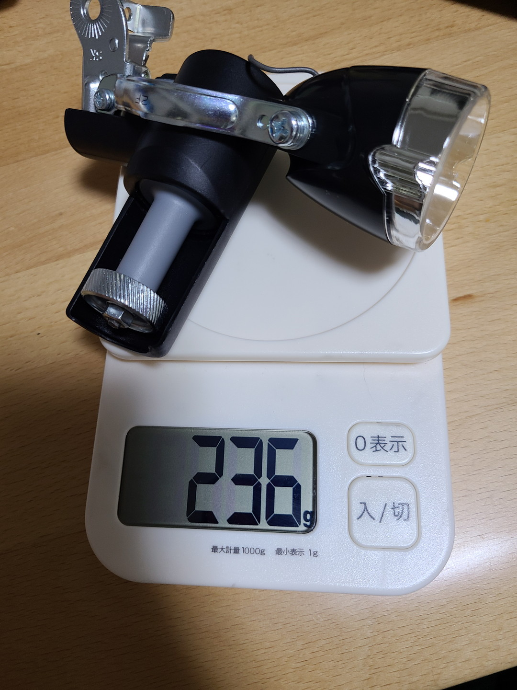
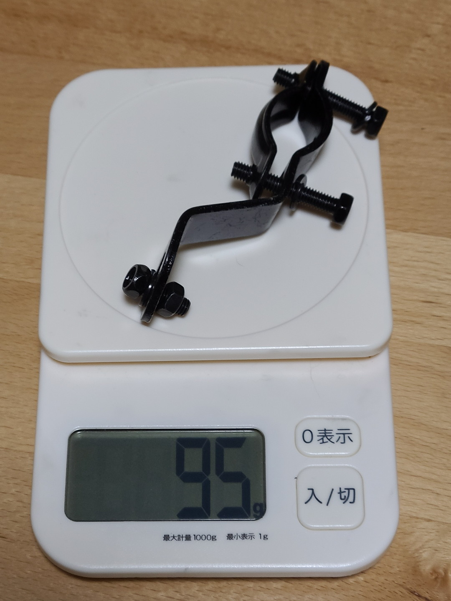
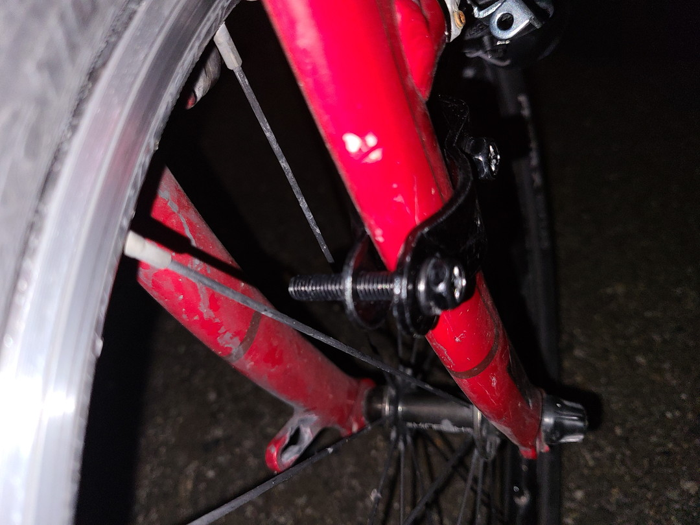
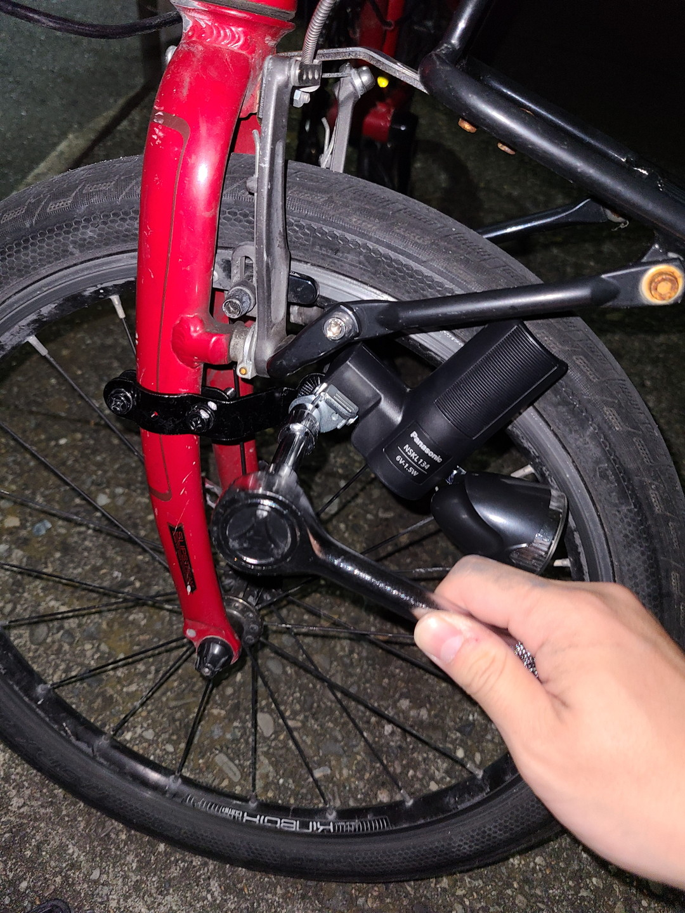
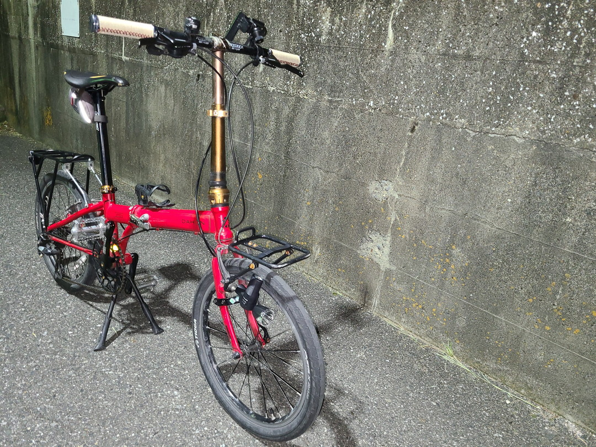
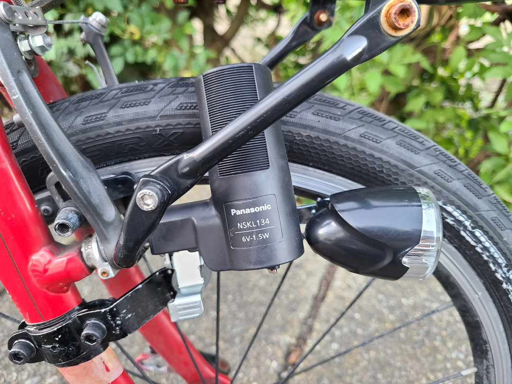
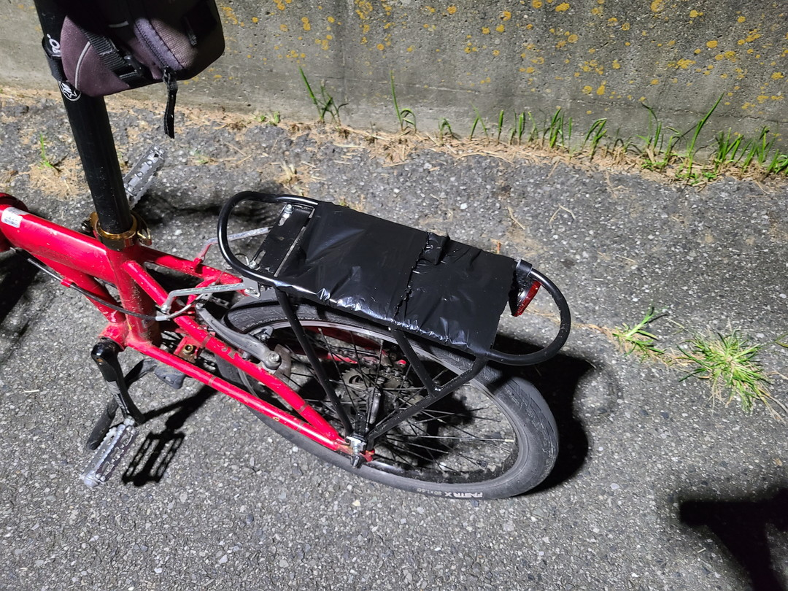

何を買うか
（前回の続き）ということでリムダイナモライトを取り付けよう。
調べてみたところドイツで開発されたべロジカルダイナモというのが一番抵抗が少ないらしい。
ハブダイナモよりもいいとかなんとか。その代わりに価格が15000円前後とかなり高価だ。
確かにハブダイナモを手組みするよりは安いが、ダイナモライトの利便さを確かめたいという今回の趣旨からすると高価すぎるので流石に却下。
次に出てきたのが
あたりだ。割りとライトの形も好みだったのとブラケットがついていたのでこれにしてしまおうと思ったが、冷静に考えてVブレーキの前につけると今後フロントキャリアを運用するときに面倒くさい事になりそうだなと思ってやめた。で、結局買ったのがこれ。
やっぱり王道を往く松下電器。トルクの抵抗の差でNSKL138と迷ったがどうせつけるなら明るいほうがいいだろうとNSKL134にした。
ブラケット
スポーツバイクには基本ダイナモライトを設置するダボ穴がないのでブラケットをつけて補うしか無い。Panasonicからも出てるが形状的に合わないのとちょっと割高だったので、
このブラケットをヨドバシで買った(606円)。
重量
もはやこんなものつける人間が重量なんて気にしないだろうけれど一応載せておく。

リムダイナモライト自体は236gだった。

ブラケットは95g……なかなかフロントヘビーになるな。
設置
ブラケットの設置は拍子抜けするほどうまく行った。事前情報ではハンマーで曲がり具合を調整したとか色々書いてあったがP8標準のフォークにその必要はなかった。
※位置が安定したらゴムを挟むなどのフォークのダメージ対策推奨。

ただ標準のボルトは長すぎてスポークスレスレだったので後日変えることにした。

逆に予想より手間取ったのはリムダイナモ本体の方だった。説明書に書いてあるやり方だとローター部分を垂直にするみたいだったがフロントキャリアと干渉するので少し本体を前後に調整させ、LED部分を動かすなどひと手間あった。あと思ったよりトルクを掛けて締めないと振動で垂れ下がるのでトルクレンチを出動させる羽目に。

ようやくそれらしくなった。街乗り自転車らしさが出たと思う。

その後雨の日にまた垂れ下がったのでこの位置になった。それ以降2週間経つが今のところ安定している。（地味に六角穴付ボルトにした。）
明るさと漕ぎ味
まず明るさだがふつーにママチャリといった感じ。無いよりあったほうがいいけれど心もとないよねと言った具合
近くは照らせるが流石にスピードを出すのは怖いという位の距離。（そもそも町中でそんな速度出さないが）
で、漕ぎ味は当たり前だが悪くなる。というよりも初速を出すまでがギア一つ分重く感じる。加速さえつけば一定速回すのはあまり苦にならない。ただ友人に試乗してもらった際はめちゃくちゃ重いとバッシングを食らったので個人の許容範囲によるところが大きいと思う。それでも気軽に出かけやすくするという目的は達成したのでOKとしよう。本当はオンオフスイッチも買おうと思ったけれど品切れだった。ただ今のところ別にわざわざ頻繁に切り替えることがないのでそんなに不便な思いをしてない。フリクションレバーを買えば自作できるような気もするので気が向いたら作ってみようと思う。その前にハブダイナモにするかもしれないけれど……。
おまけ

泥除けなんていらないんだよってことでダイソーの農ポリをリアキャリアにかぶせた。水たまりで速度を出しても服は汚れ亡くなったが「貧乏くさい」とものすごくdisられた。悲しい。ではまた～。